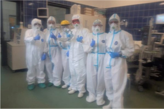

Bolesławiec
Przegląd Lubański
Archiwum
Lekarze i pielęgniarki ze szpitala w Bolesławcu do koronasceptyków: martwimy się tym, ze Wy się nie martwicie…
Zespół Oddziału Intensywnej Opieki Medycznej szpitala w Bolesławcu, do którego trafiają ciężko chore osoby zakażone koronawirusem (w tym również osoby z Powiatu Lubańskiego), zwrócili się z odezwą do wszystkich koronasceptyków.
Bolesławieccy medycy w liście otwartym do wszystkich koronasceptyków napisali:
“Drodzy nasi przyszli pacjenci, taka sobie ciekawostka… Chcieliśmy Was poinformować, że jesteśmy tacy jak Wy. Pielęgniarki, lekarze, ratownicy medyczni… Lubimy, kiedy jest nam wygodnie, lubimy nasze kolorowe mundurki z bawełny, w których wygodnie się pracuje. Lubimy rozmawiać z naszymi pacjentami i wiemy, że jest im łatwiej, kiedy mogą patrzeć na nasze ruszające się usta.
Dramatyczna sytuacja w szpitalu covidowym w Bolesławcu! Ale nie tylko!
Tak źle jeszcze nie było. Dyrektor Szpitala Powiatowego w Bolesławcu robi co może, by razem ze swoją załogą ratować pacjentów covidowych z czterech powiatów, w tym również z Powiatu Lubańskiego Czy mu się to uda?
Wczoraj (04.11) szef bolesławieckiej placówki w programie TV Dami poinformował że w szpitalu zostało tylko 5 wolnych respiratorów. – Sytuacja jest dramatyczna – podkreślił Barczyk. Dyrektor prosi o respiratory i uzupełnienie personelu, gdzie tylko może. Na razie bezskutecznie. Respiratorów w odwodach po prostu nie ma i póki co nie będzie. Podobno 200 czeka jeszcze w magazynie Agencji Rezerw Materiałowych. Czy rzeczywiście są i kiedy ewentualnie trafią do placówek, tego nie wiadomo.